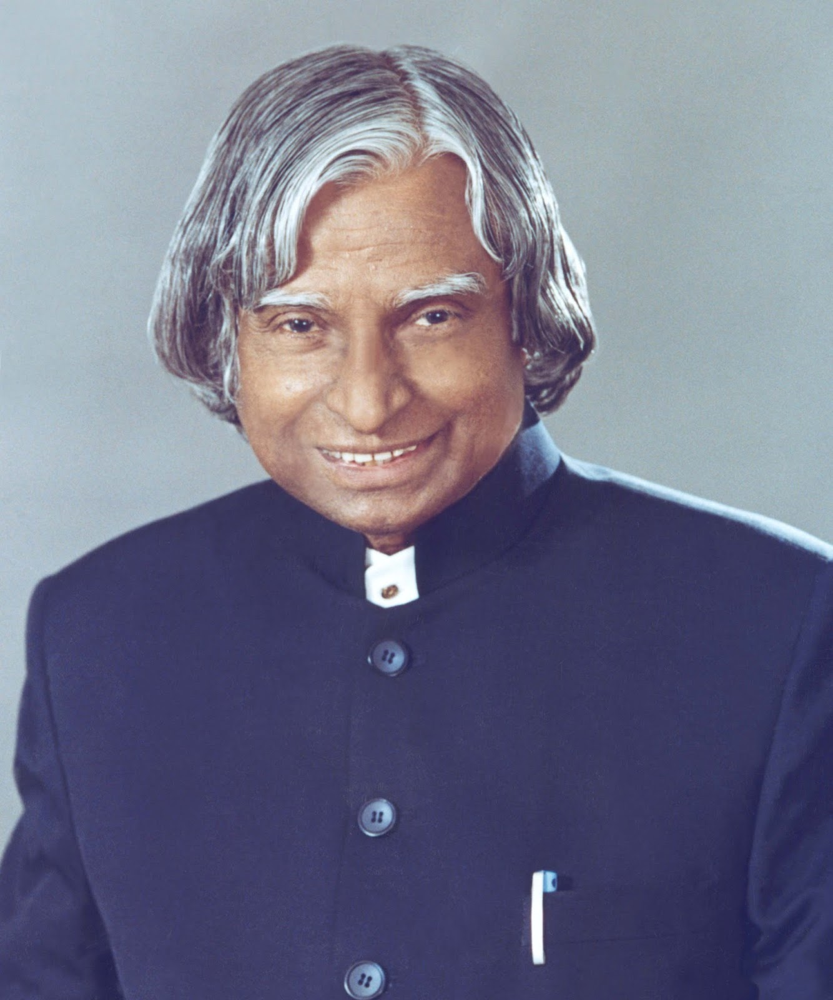

Biography
Dr. A. P. J. Abdul Kalam was an Indian aerospace scientist and the 11th President of India. He played an important role in India's space and missile development programs.
He played an important role in India's space and missile development programs. He worked with organizations such as DRDO and ISRO and became widely known as the "Missile Man of India."
Dr. Kalam served as the President of India from 2002 to 2007. He received several awards, including the Padma Bhushan, Padma Vibhushan, and Bharat Ratna. He was also a popular teacher and inspired millions of students through his books, speeches, and interactions with young people.
Dr. A. P. J. Abdul Kalam passed away on 27 July 2015 while delivering a lecture at the Indian Institute of Management Shillong. He is remembered for his contributions to science, education, and public service.
Achievements
- Worked on India's space and missile programs.
- Served as the 11th President of India.
- Received the Bharat Ratna.
- Served as the 11th President of India from 2002 to 2007.
- Received the Bharat Ratna, India's highest civilian award, in 1997.
- Received the Padma Bhushan and Padma Vibhushan for his contributions to the nation.
- Inspired millions of students through his books, speeches, and interactions.
Timeline
- 1931: Born in Rameswaram, Tamil Nadu.
- 1960: Started his career at DRDO.
- 1980: Played a key role in India's satellite launch program.
- 2002: Became the President of India.
- 2015: Passed away while delivering a lecture.